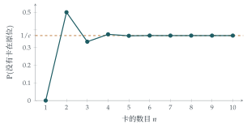

STEP II 2016，第 12 题
继续之前，请先阅读题目（原题为英文）。题目载于 STEP Support Programme 的题目资料库： step.maths.org/questions/16-s2-q12
引子
一支十一人的足球队匆忙更衣，各人随手抓起一件球衣就穿。没有任何人穿上自己球衣的机会有多大？再设想那是一支五十人的大军，甚至是一百万人的人群。人多了，出错的人也多了，机会是否随之上升？还是因为有更多人可能碰巧拿对，机会反而下降？出人意料的是，这个机会几乎完全不变：由五个人开始，它与 \(1/e \approx 0.368\) 的差距不超过半个百分点。
这是组合概率（combinatorial probability）中最古老的问题，由 Pierre de Montmort 于 1708 年提出，称为 problème des rencontres（相遇问题）。本题以容斥原理（inclusion–exclusion principle）解决这个问题；容斥原理是计数互相重叠的事物的工具，而所得的答案，是 \(e\) 在数学中最令人意想不到的现身之一。
动笔之前
先试 \(n = 3\)：列出卡 \(1, 2, 3\) 的全部六种次序，数一数其中有多少种是没有任何一张卡在自己位置上的。如果你有耐性，再试 \(n = 4\)（共有 \(24\) 种次序）。
当 \(n = 3\) 时，只有 \(231\) 和 \(312\) 没有任何卡在自己的位置上，所以概率是 \(\frac26 = \frac13\)。当 \(n = 4\) 时，\(24\) 种次序中有 \(9\) 种符合条件，概率为 \(\frac38 = 0.375\)。没有任何一张卡留在原位的排列，称为错排（derangement）。
逐步解题
阶段 1 三个事件的容斥原理
怎样把 \(A \cup B \cup C\) 写成两个事件的并集（union），使两个事件的公式可以派上用场？
把 \(A \cup B\) 看成单一事件，对它和 \(C\) 应用公式： \[\mathrm{P}(A \cup B \cup C) = \mathrm{P}(A \cup B) + \mathrm{P}(C) - \mathrm{P}\bigl((A \cup B) \cap C\bigr).\] 现在 \((A \cup B) \cap C = (A \cap C) \cup (B \cap C)\)，再应用一次公式，得 \(\mathrm{P}\bigl((A \cap C) \cup (B \cap C)\bigr) = \mathrm{P}(A \cap C) + \mathrm{P}(B \cap C) - \mathrm{P}(A \cap B \cap C)\)。把 \(\mathrm{P}(A \cup B)\) 也展开，再合并各项，便得出结果。■
四个事件时，规律依旧：把四个单一事件的概率相加，减去六个两两交集（intersection）的概率，加上四个三重交集的概率，再减去 \(\mathrm{P}(A \cap B \cap C \cap D)\)。
阶段 2 各个概率
如果卡 \(i\) 在位置 \(i\)，其余的卡有多少种排法？如果卡 \(i\) 和卡 \(j\) 都固定了呢？
共有 \(n!\) 种机会均等的次序。如果卡 \(i\) 固定在位置 \(i\)，其余 \(n - 1\) 张卡可以任意排列：共 \((n - 1)!\) 种排法。所以 \[\begin{gathered} \mathrm{P}(E_i) = \frac{(n - 1)!}{n!} = \frac{1}{n}, \qquad \mathrm{P}(E_i \cap E_j) = \frac{(n - 2)!}{n!} = \frac{1}{n(n - 1)}, \\ \mathrm{P}(E_i \cap E_j \cap E_k) = \frac{(n - 3)!}{n!} = \frac{1}{n(n - 1)(n - 2)}. \end{gathered}\] 一般而言，指定的 \(k\) 张卡全部在自己位置上的概率是 \(\frac{(n - k)!}{n!}\)。
阶段 3 加起来
在 \(\mathrm{P}(E_1 \cup \cdots \cup E_n)\) 的容斥公式中，涉及 \(k\) 个事件交集的项有多少个？它们的总和是多少？
从这些事件中选出 \(k\) 个，有 \(\binom{n}{k}\) 种方法，而每个交集的概率都是 \(\frac{(n - k)!}{n!}\)。所以各个 \(k\) 重项的总和是 \[\binom{n}{k}\frac{(n - k)!}{n!} = \frac{n!}{k!\,(n - k)!}\cdot\frac{(n - k)!}{n!} = \frac{1}{k!}.\] 除了 \(k!\) 之外，全部约去。配上正负相间的符号， \[\mathrm{P}(\text{最少有一张卡在自己的位置上}) = 1 - \frac{1}{2!} + \frac{1}{3!} - \cdots + (-1)^{n+1}\frac{1}{n!}. \qed\] 所以出现错排的概率是 \[d_n = 1 - 1 + \frac{1}{2!} - \frac{1}{3!} + \cdots + (-1)^n\frac{1}{n!} = \sum_{k=0}^{n}\frac{(-1)^k}{k!}.\]
阶段 4 恰好一张
要恰好有一张卡在原位，是哪一张卡？其余的卡又必须怎样？
先选定哪一张卡在自己的位置上（\(n\) 种选法）。卡 \(i\) 在原位的概率是 \(\frac1n\)；在这个条件下，其余 \(n - 1\) 张卡必须在它们之间形成一个错排，其概率为 \(d_{n-1}\)。所以 \[\mathrm{P}(\text{恰好一张}) = n \cdot \frac{1}{n} \cdot d_{n-1} = \sum_{k=0}^{n-1}\frac{(-1)^k}{k!}. \qed\]
回顾
先多算，再修正。把各个 \(\mathrm{P}(E_i)\) 相加，会把有两张卡固定的排列算了两次；减去两两交集的项可以修正，但对三张卡固定的情况又减得太多；如此类推。
对称性令各项相等。每个 \(k\) 重交集的概率都相同，所以公式的每一层都是一个数乘以一个二项式系数（binomial coefficient）。
化为较小的情况。“恰好一张”变成了 \(n - 1\) 张卡的错排。
背后的数学
\(e\) 从何而来
级数 \(\sum (-1)^k/k!\) 就是指数级数（exponential series）\(e^x = \sum x^k/k!\) 在 \(x = -1\) 时的值。所以当 \(n \to \infty\) 时， \[d_n \to e^{-1} \approx 0.3679,\] 而恰好有一张卡对上的概率也趋向同一个极限。收敛（convergence）的速度快得惊人（图 9.8.1）：在 \(1/n!\) 一项停下来所产生的误差小于 \(1/(n + 1)!\)，所以在 \(n = 7\) 时，答案已经与 \(1/e\) 吻合至小数点后四位。事实上，\(n\) 件物件的错排数目 \(n!\,d_n\) 恰好是最接近 \(n!/e\) 的整数。

对上的数目服从泊松分布
结论还不止于此。设 \(N\) 为在自己位置上的卡的数目。那么对每个 \(k\)，都有 \(\mathrm{P}(N = k) \to \frac{e^{-1}}{k!}\)：在极限之下，对上的数目服从平均值为 \(1\) 的泊松分布（Poisson distribution）。平均值为甚么是 \(1\)，不用任何计算也看得出来：\(N\) 是 \(E_1, \ldots, E_n\) 的指示变量（indicator）之和，每个的期望值（expectation）都是 \(\frac1n\)，而即使这些事件并非独立，期望值仍然可以相加。STEP III 2004 Q12（见练习）证明方差（variance）同样是 \(1\)。每当有许多机会很微、又近乎独立的事件时，泊松分布就会出现；错排是一个经典例子，也是第 12 章 第 12.11 节 的主题。
Pierre Rémond de Montmort 是一位法国贵族，他在著作 Essay d’analyse sur les jeux de hazard（1708）中研究各种博彩游戏。在 treize（十三）这个游戏中，玩家派出十三张牌，同时口中数着“一、二、三……”，只要有一次派出的牌与所数的数字相同，便算胜出。Montmort 求出了胜出的概率，并在与尼古拉·伯努利（Nicolaus Bernoulli）的通信中，于 1713 年或之前确立了一般公式。欧拉（Euler）在 1753 年重新发现了这条公式。容斥原理其后由棣莫弗（Abraham de Moivre）加以形式化，而它的一般形式则由西尔维斯特（James Joseph Sylvester）在十九世纪建立。
思维技巧
要计数互相重叠的集合的并集，先把各集合的大小相加，减去两两重叠的部分，加上三重重叠的部分，如此类推。
当对称性令同一大小的重叠部分全部相等时，这个方法最见威力，本题正是如此。在大学里，它会在组合数学（combinatorics）、概率论和数论（number theory）中出现；在数论中，它用来计数不能被一系列质数中任何一个整除的整数，并由此引出欧拉函数（Euler’s totient function）和默比乌斯函数（Möbius function）。
延伸练习
球衣。试做 STEP III 2004，第 12 题。这道题用指示变量计数穿上自己球衣的球员人数，求出平均值和方差，并把结果与泊松分布比较。
递推关系。设 \(D_n\) 为 \(n\) 件物件的错排数目。考虑卡 \(1\) 去了哪个位置，以及原本在该位置的卡是否去了位置 \(1\)，证明 \(D_n = (n - 1)(D_{n-1} + D_{n-2})\)。用 \(D_3 = 2\)、\(D_4 = 9\) 验算。
恰好 \(k\) 张。证明恰好有 \(k\) 张卡在自己位置上的概率是 \(\frac{1}{k!}d_{n-k}\)，并且它趋向 \(\frac{e^{-1}}{k!}\)。
互质的整数。用容斥原理计数由 \(1\) 至 \(30\) 的整数中，不能被 \(2\)、\(3\) 和 \(5\) 任何一个整除的有多少个。你的答案与 \(30\bigl(1 - \frac12\bigr)\bigl(1 - \frac13\bigr)\bigl(1 - \frac15\bigr)\) 有甚么关系？
延伸阅读
Geoffrey Grimmett & Dominic Welsh, Probability: An Introduction（Oxford University Press）。大学一年级教科书，涵盖容斥原理和配对问题。
William Feller, An Introduction to Probability Theory and Its Applications, Vol. 1（Wiley），第 IV 章。经典之作，载有配对问题的许多变化。
Miklós Bóna, A Walk Through Combinatorics（World Scientific），关于容斥原理的部分。